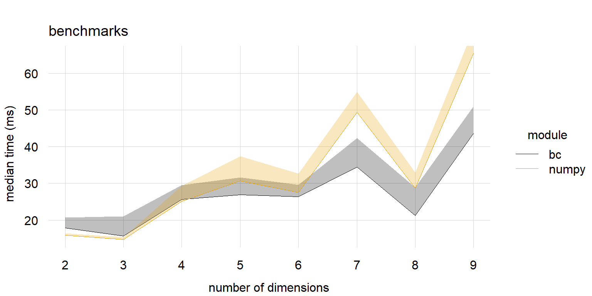
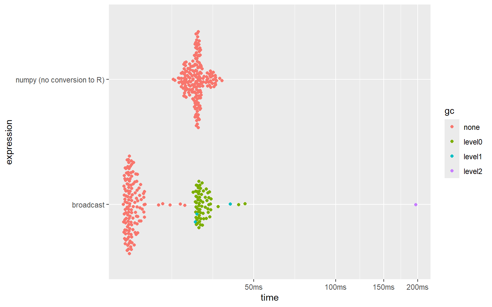

# set-up ====
library(broadcast)
library(tinycodet)
import_as(~rt, "reticulate")
np <- rt$import("numpy", convert = FALSE)
gc <- rt$import("gc", convert = FALSE)
get_times <- function(obj, j) {
nms <- names(res$expression)
j <- which(nms == j)
idx <- rowSums(obj$gc[[j]][, 2:3]) == 0
times <- obj$time[[j]][idx]
return(times)
}
gc$disable()
# loop
median_bc <- median_np <- q1_bc <- q1_np <- q3_bc <- q3_np <- vector("numeric", 8)
counter <- 1L
target_len <- 9e6
for(i in 2:9) {
print(i)
n <- round(target_len^(1/i)) |> as.integer()
len <- n^i
cat("i = ", i, "\n")
cat("n = ", n, "\n")
cat("len = ", len, "\n")
x.dims <- rep(c(n, 1L), i - 1)[1:i]
y.dims <- rep(c(1L, n), i - 1)[1:i]
a.dims <- rt$r_to_py(as.list(x.dims))
b.dims <- rt$r_to_py(as.list(y.dims))
npa <- np$random$random_sample(a.dims)
npb <- np$random$random_sample(b.dims)
a <- array(runif(100), x.dims)
b <- array(runif(100), y.dims)
res <- bench::mark(
broadcast = bc.num(a, b, "+"),
`numpy (NO conversion to R)` = npa + npb,
check = FALSE,
min_iterations = 100
)
bc_all <- get_times(res, "broadcast")
np_all <- get_times(res, "numpy (NO conversion to R)")
median_bc[counter] <- median(bc_all)
median_np[counter] <- median(np_all)
q1_bc[counter] <- quantile(bc_all, 0.25)
q3_bc[counter] <- quantile(bc_all, 0.75)
q1_np[counter] <- quantile(np_all, 0.25)
q3_np[counter] <- quantile(np_all, 0.75)
counter <- counter + 1L
}Benchmarks with Numpy+reticulate
Introduction
In this article, the speed of ‘broadcast’ is compared to the speed of ‘Numpy’ via {reticulate}.
Keeping comparisons fair
To keep the comparisons between ‘broadcast’ and ‘Numpy’+‘reticulate’ fair, a number of measures have been taken:
- conversion from Numpy to ‘R’ is DISABLED; this allows for comparing the speed more fairly. When conversion would be enabled, precious time would be wasted to convert from Numpy structures to comparable ‘R’ structures.
- garbage collection is disabled in reticulate’s Python. In ‘R’, only benchmarks with no garbage collection, or level 0 garbage collection, is used. I feel this keeps the comparisons relatively fair (but it’s not perfect).
- ‘R’ has more support for missing values than ‘Numpy’, which also leads to a difference in speed. But both ‘R’ and ‘Numpy’ handle missing values equally in decimal numbers ( 64bit floats in Numpy and 64bit doubles in ‘R’ ), through the
NaNconstruct. Therefore, only operations on decimal numbers are compared.
Many Orthogonal Arrays
8 pairs of decimal number arrays are created in both ‘R’ and ‘Numpy’. They all have a length of (approximately) 9*10^6 elements. Each pair will have a different number of dimensions, from 2 to 9 (hence 8 pairs of arrays). I.e. a pair of 2d arrays, a pair of 3d arrays, etc.
These pairs of arrays are fully orthogonal, thus the maximum amount of broadcasting will be employed.
For each pair of array the outer sum is computed using ‘broadcast’ and ‘Numpy’. This computation is repeated 100 times, and the median result is taken.
Thus we get the following code:
Using {tinyplot}, the median, first quartile, and third quartile of the bench-marked computation times are presented in the following graph:

Large non-orthogonal arrays comparisons
How about arrays that are not fully orthogonal, but still require a lot of broadcasting in pari-wise computations?
Here is the benchmark:
library(broadcast)
library(tinycodet)
import_as(~rt, "reticulate")
np <- rt$import("numpy", convert = FALSE)
gc <- rt$import("gc", convert = FALSE)
gc$disable()
n <- 26L
npa <- np$random$rand(n, 1L, n, 1L, n)
npb <- np$random$rand(n, n, 1L, n, 1L)
a.dim <- c(n, rep(c(1L, n), 2))
b.dim <- c(n, rep(c(n, 1L), 2))
a <- array(rnorm(100), a.dim)
b <- array(rnorm(100), b.dim)
bm_numpy_large <- bench::mark(
broadcast = bc.num(a, b, "+"),
`numpy (no conversion to R)` = npa + npb,
check = FALSE,
min_iterations = 200,
)
summary(bm_numpy_large)
ggplot2::autoplot(bm_numpy_large)#> # A tibble: 2 × 6
#> expression min median `itr/sec` mem_alloc `gc/sec`
#> <bch:expr> <bch:tm> <bch:tm> <dbl> <bch:byt> <dbl>
#> 1 broadcast 16.6ms 17.6ms 55.4 90.6MB 27.3
#> 2 numpy (no conversion to R) 25.4ms 30.9ms 32.4 0B 0